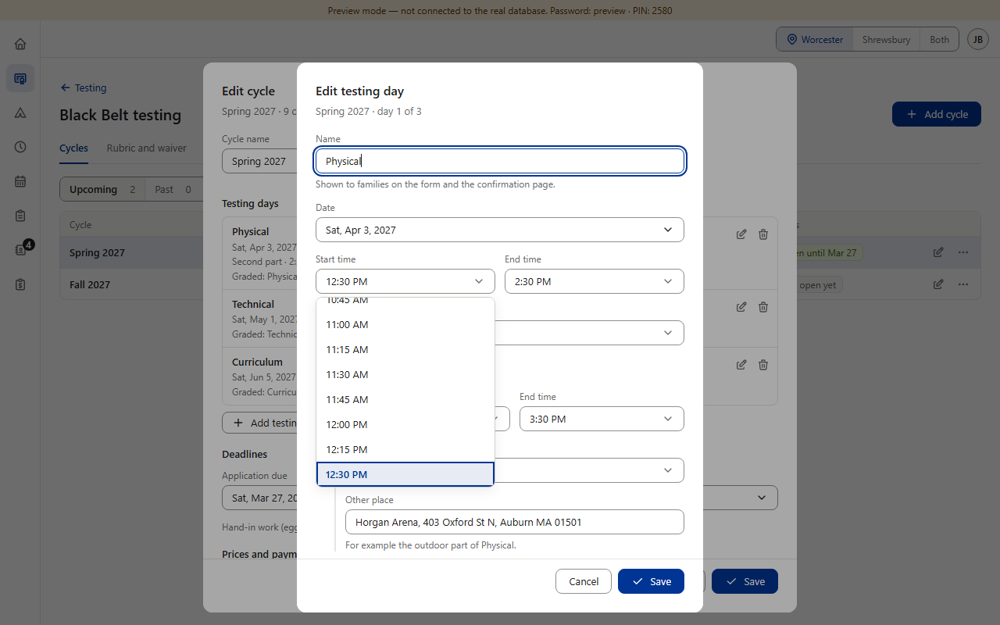
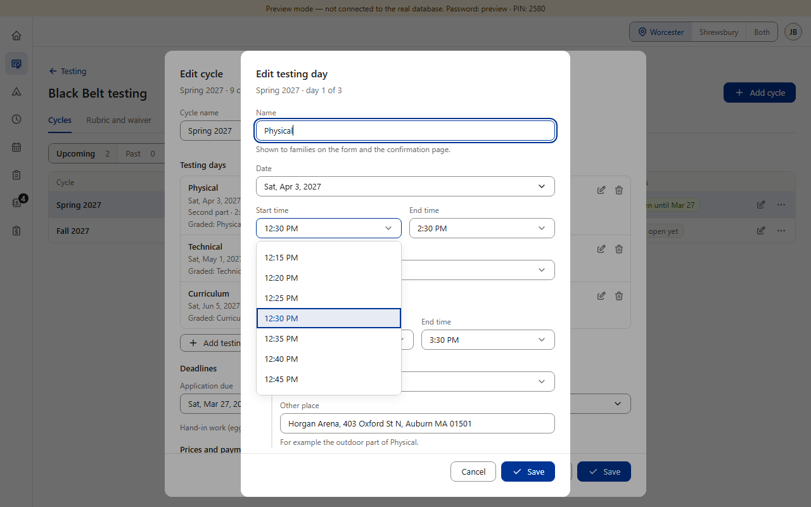
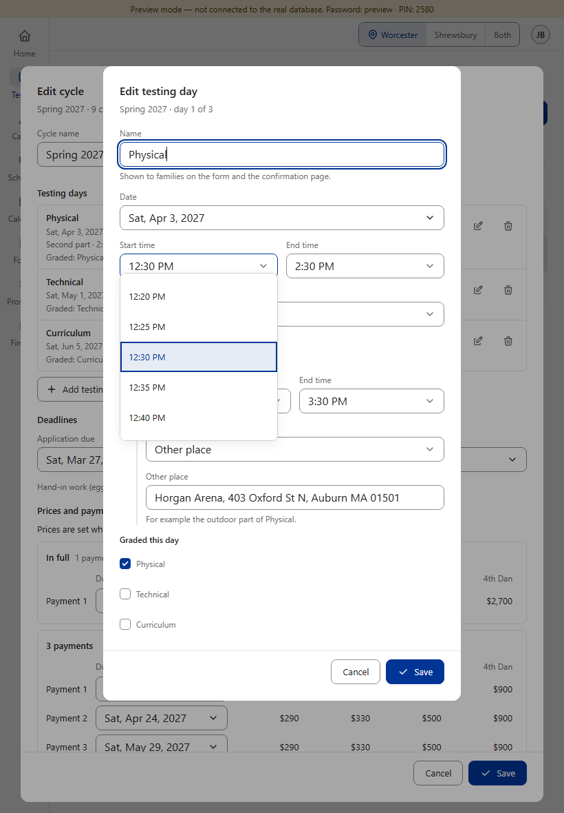
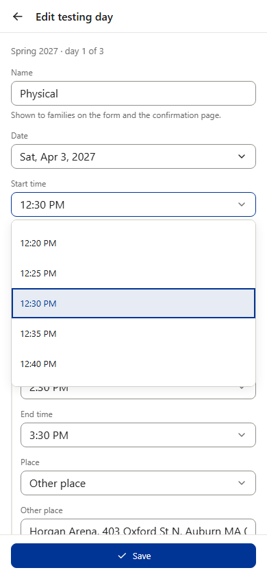
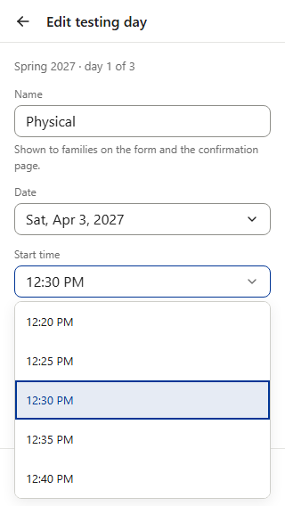

Edit cycle → a testing day → Start time. The four time fields (Start, End, and the second part’s Start and End) switch to the dashboard’s shared time list — the one Star, Camps and Finance already use. Nothing else in the dialog changes. Migration 0032 (live since today) already lets the database save 5-minute times.




